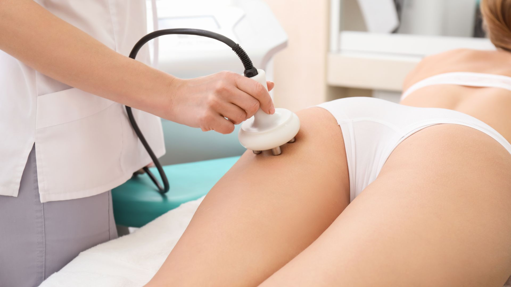
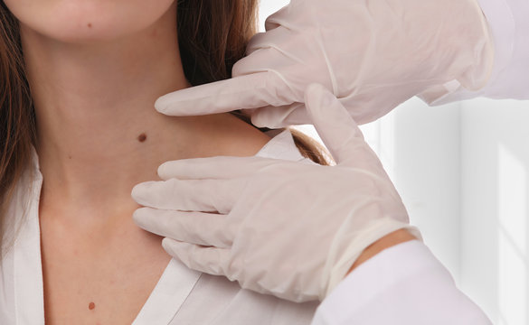
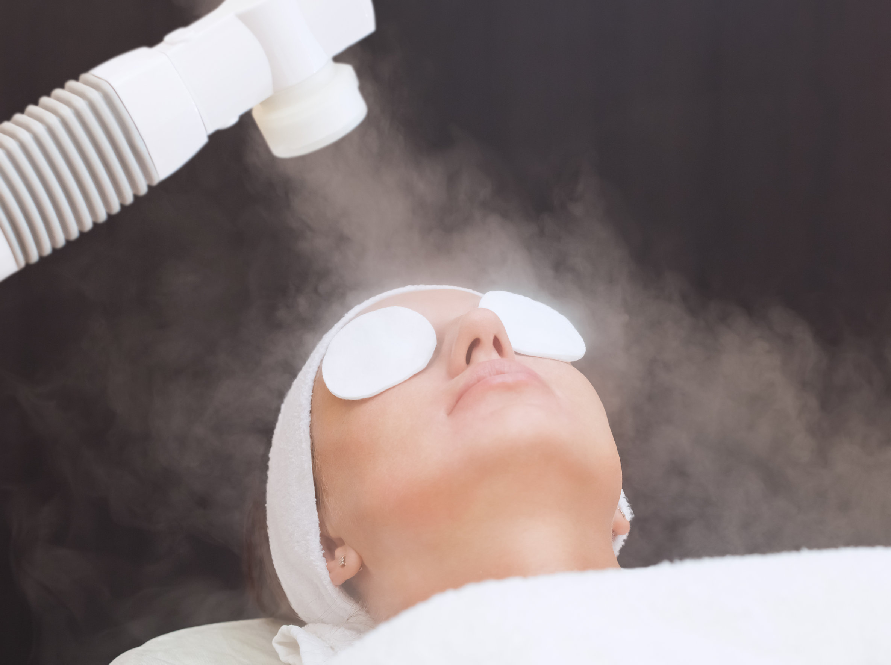
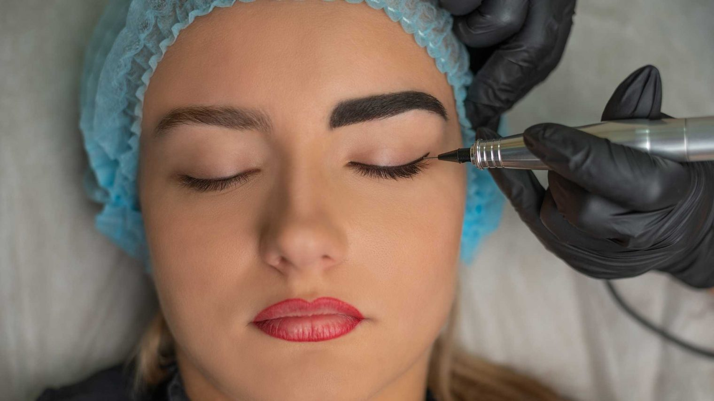
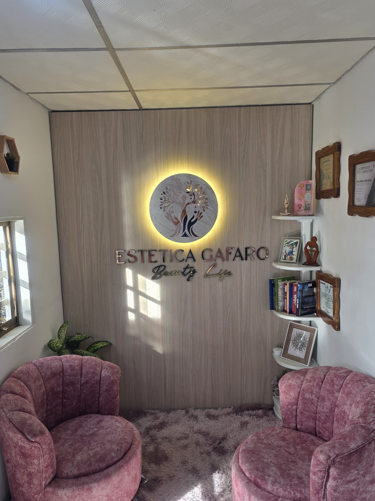
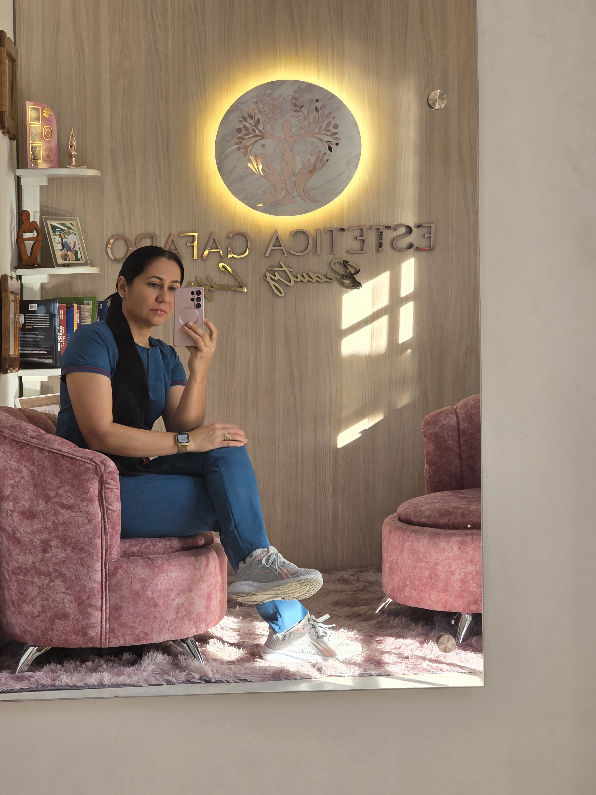
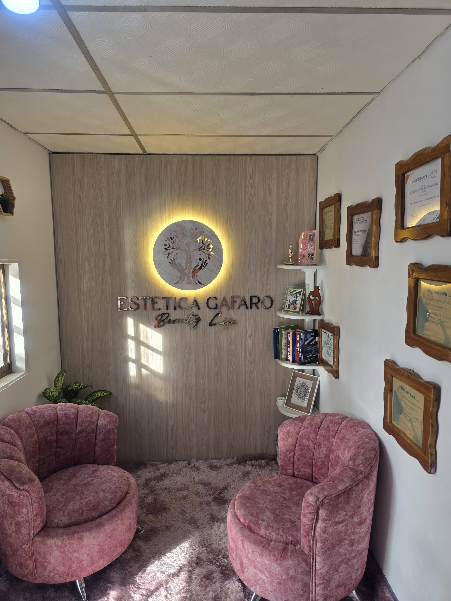
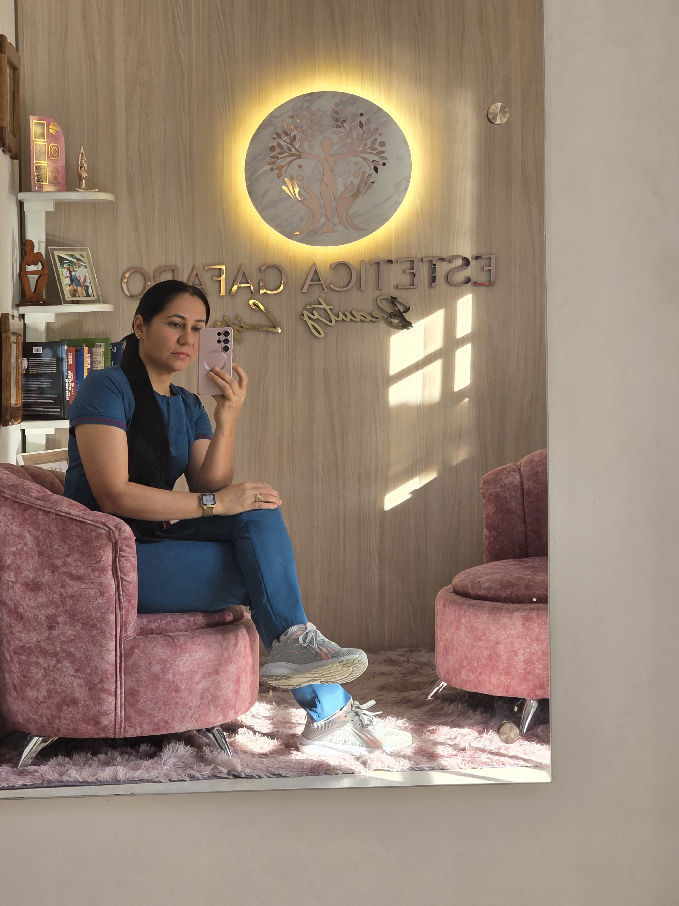
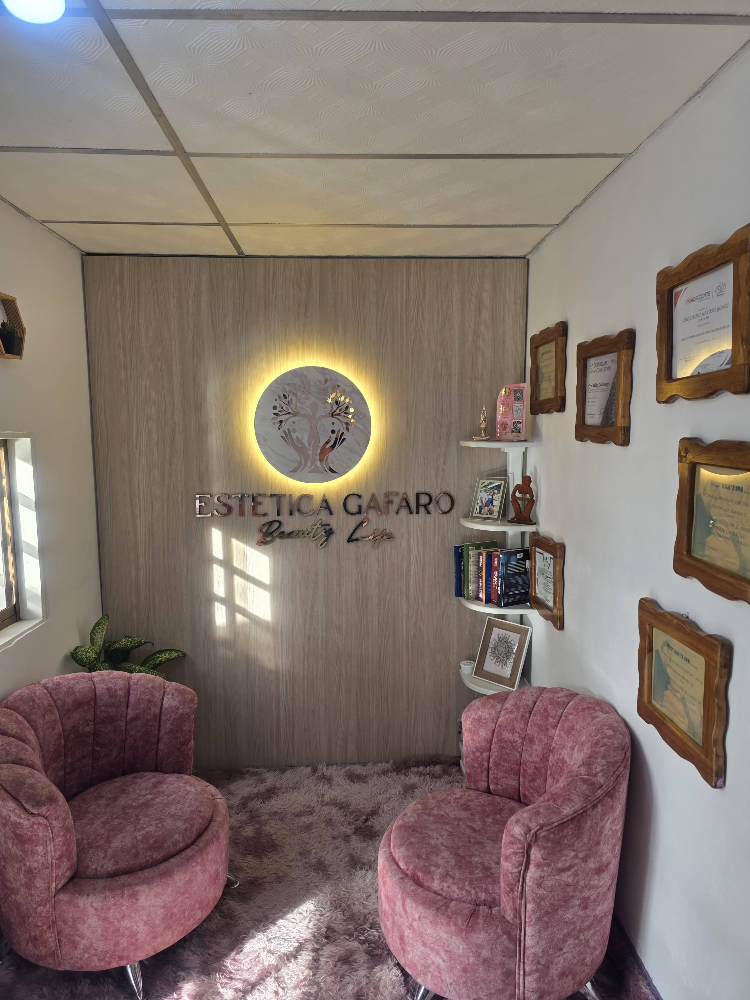

- Tratamientos faciales y corporales
Son procedimientos estéticos diseñados para mejorar la apariencia y salud de la piel, tanto en el rostro como en el cuerpo.
Incluyen hidratación, nutrición, exfoliación y técnicas específicas según la necesidad del paciente.

- Masajes moldeadores y reductores
Técnicas manuales que estimulan la circulación y movilizan los tejidos grasos,
ayudando a definir la silueta, reducir medidas y mejorar la apariencia de la piel.

- Tratamiento para flacidez
Procedimientos que buscan tensar y reafirmar la piel mediante aparatología o técnicas manuales,
estimulando la producción de colágeno y elastina para recuperar firmeza.

- Tratamiento para celulitis
Terapias que mejoran la circulación, reducen la retención de líquidos y suavizan el aspecto de la piel con “piel de naranja”,
combinando masajes, aparatología y productos específicos.

- Masajes postquirúrgicos y postparto
Masajes especializados que favorecen la recuperación después de cirugías estéticas o del parto.
Ayudan a disminuir la inflamación, prevenir fibrosis y mejorar la cicatrización.
- Retiro de acrocordones
Procedimiento estético para eliminar pequeños fibromas blandos o “bolitas de piel” mediante técnicas seguras y mínimamente invasivas.

- Limpiezas faciales
Tratamiento profundo que elimina impurezas, células muertas y exceso de grasa de la piel, dejando el rostro más limpio, fresco y preparado para absorber nutrientes.

- Ozonoterapia tópica para úlceras varicosas
Aplicación de ozono directamente sobre lesiones cutáneas producidas por insuficiencia venosa. Favorece la oxigenación, desinfección y cicatrización de la piel.

- Retiro de cejas micropigmentadas
Procedimiento para eliminar o aclarar pigmentos aplicados previamente en cejas mediante técnicas seguras, devolviendo un aspecto más natural.

Mi nombre es Cruz Delina Gafaro Gómez y me gustaría compartir un poco sobre mi historia y crecimiento emprendiendo en Estética Gafaro Beauty Life…
Desde muy pequeña mi deseo por estudiar medicina era muy fuerte, mis opciones eran Pediatría o algo relacionado con la belleza; pero por motivos económicos no pude cursar dichas carreras. Por lo que decidí estudiar la ingeniería en tecnología de los alimentos, lo cual no resulto muy bien y preferí dedicarme a otra cosa. Comencé otros estudios en una universidad privada de San Cristóbal referente a educación preescolar.
Ya terminando quede embarazada y me vine a vivir a El Nula, siempre he sido alguien de valerse por si misma y forjar mi futuro, no estoy acostumbrada a quedarme quieta y mucho menos a ser dependiente, de esta manera realice cursos de masajes relajantes, reductores y aroma terapia. Por tal motivo en mi cumpleaños como ya estaba terminando los cursos, decidí gastar un regalo en los materiales necesarios para poder trabajar.
El inicio de la Estética Gafaro Beauty Life fue en el cuarto más pequeño de mi casa acomodando lo que había comprado y todos los servicios eran de forma manual. No obstante, luego de un año de sacrificios, aprendizajes y algunas experiencias mi deseo por aprender y estudiar más creció, especializándome en Colombia, Valencia, Caracas, San Cristóbal y así ir comprando aparatología para poder dar un mejor trabajo. Actualmente poseo 11 años de servicio con mas de 10 cursos, especializaciones en micropigmentación de labios, posoperatorio, recuperación posquirúrgica y seguimos en crecimiento para poder ofrecer lo mejor.

 



Nuestra misión en Gafaro Beauty Life es realzar la belleza natural y promover el bienestar integral de nuestros clientes a través de servicios estéticos personalizados y de la más alta calidad. Nos dedicamos a ofrecer una experiencia excepcional en un ambiente acogedor y profesional, utilizando técnicas innovadoras y productos premium para que cada persona se sienta renovada, segura y en armonía consigo misma, construyendo así una relación de confianza y cuidado a largo plazo.
Para el año 2026 Estética Gafaro Beauty Life se proyectara con un aumento gradual y significativo de sus clientes en cuanto, alianzas estratégicas con reconocidos cirujanos estéticos y demás profesionales de la salud y belleza corporal, Un establecimiento que será reconocido a nivel Nacional como un ejemplo de ética, organización, servicio, tecnología y compromiso presentes en cada uno de los servicios que brindamos al cliente, teniendo como prioridad ofrecer un servicio profesional y mostrar resultados reales.
Trabajamos cada día para mejorar el bienestar de cada cliente combinando el estado físico y estético con la salud mental, aumentando la confianza y autoestima.
Destacamos por nuestra profesionalidad, donde brindamos calidad, excelencia e innovación. También nuestra responsabilidad, puntualidad y respeto nos define al momento de trabajar.